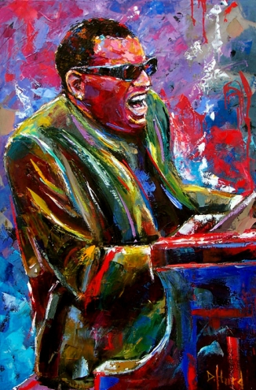
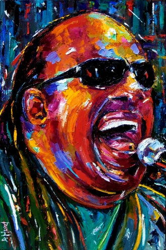

Sala Jazz & Blues
Quando la musica era improvvisazione, c’era quell’atmosfera quasi da “bisca”. Rivivete in questa stanza, quell’aria… luci soffuse, tavolini e voglia di ascoltare musica, accompagnati da camerieri con eleganza e tanto charm.
Diverso dal concetto folklorico di canto popolare, ma da esso originata, la canzone attraverso i suoi interpreti raccontò, a partire dalla seconda metà dell'Ottocento, la storia, le vicende, e le trasformazioni delle città italiane e straniere. Si diffuse nei salotti borghesi dove si organizzavano incontri di società; Spesso si trattò di canzoni dialettali che parteciparono a festival. All'inizio del 1900, negli Stati Uniti d'America, iniziarono a diffondersi tra la popolazione urbana diversi generi musicali derivati dalle tradizioni popolari degli africani portati come schiavi sul continente, e dalle loro contaminazioni con le tradizioni musicali bianche.
Nacquero e acquisirono notorietà in questo modo il ragtime, il blues urbano e da ultimo, il jazz, che combinava la musica bandistica e da parata, che veniva suonata soprattutto a New Orleans, con forti dosi d'improvvisazione e con particolari caratteristiche ritmiche e stilistiche. Questi nuovi generi erano spesso interpretati da musicisti autodidatti molto più legati ad una tradizione musicale orale che non alla letteratura musicale, contribuì a creare musiche di grande freschezza e vitalità. La musica jazz continuò a svilupparsi per tutto il XX secolo, diventando prima musica di larghissimo consumo durante gli anni venti/anni trenta (detti gli anni dello swing), intrecciandosi con altri generi per dare vita a forme di espressione musicale ancora diverse ed evolvendosi poi gradatamente in una "musica per musicisti" e per appassionati, espandendosi fuori dall'America e trovando seguaci prima in Europa e poi in tutto il mondo, e diventando uno dei contributi musicali più importanti del Nuovo Continente.